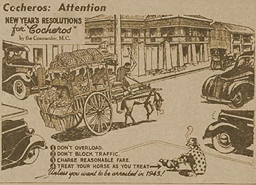

|
j
a v a s c r i p t |
January 3, 1943
The Japanese are calling this the "Year of Glorious Achievement." I too see a lot of achievements coming — none Japanese. At Joe McMicking's, I met a beaming Father Theo. He now has a pass (strictly honorary) from Tokyo that allows him to visit any prison camp. He had to swear an oath to not commit any hostile acts, not interfere with the Japanese Administration, and not give anything direct to the soldiers. He said Joe is back in Cabanatuan, or at least his name was on a list dated December 12, and no one has left the camp since. Also, Hans Menzi is in on serious charges of passing information to Bataan and supporting the guerrillas. Father Theo delivered a lot of packages to POWs in Cabanatuan for Christmas. About 6,000 British food packages are already there but not yet distributed. Deaths are now down to five a day. The Padre is still bringing money in by hiding it under the unblessed hosts. Most Luzon prisoners have been released, but not the Southerners as fighting continues in their provinces. The 8,000 to 9,000 Visayan prisoners in Capas are the most forgotten men in the Philippines. Requests for aid for American prisoners get an immediate response, but "Filipinos tend to neglect their own," and he intends to do something about that.

Rules for Cocheros
"Unless you want to be arrested in 1943" |
|
|
|
|